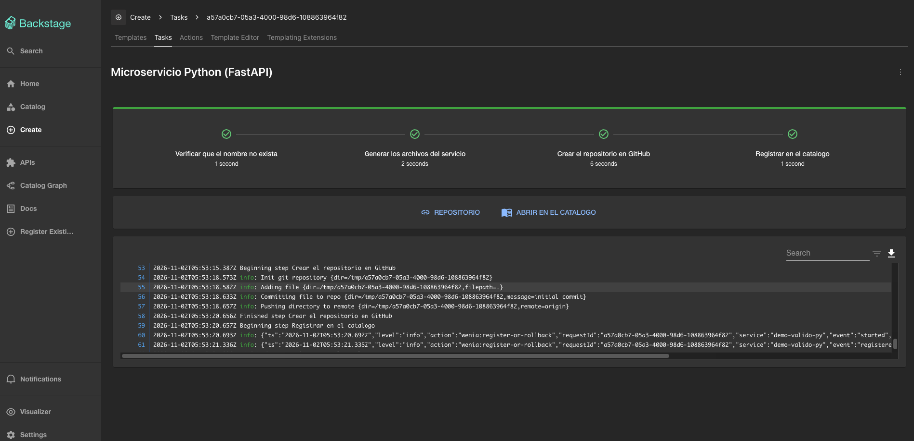
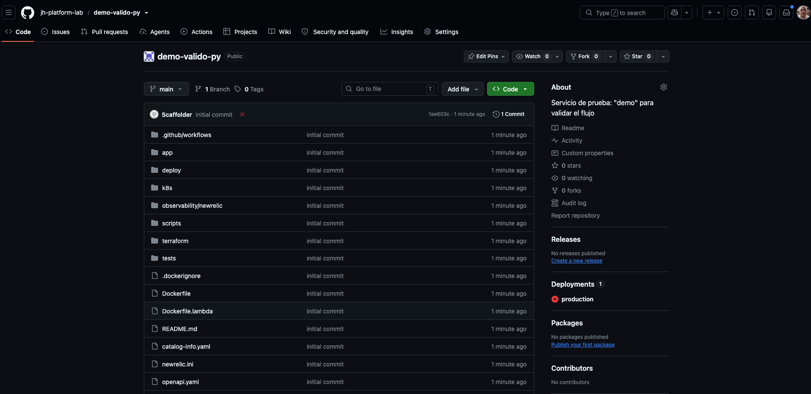
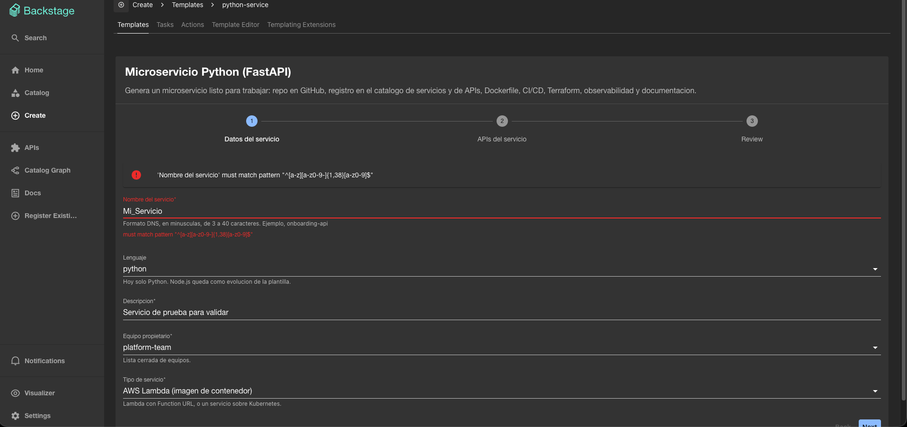
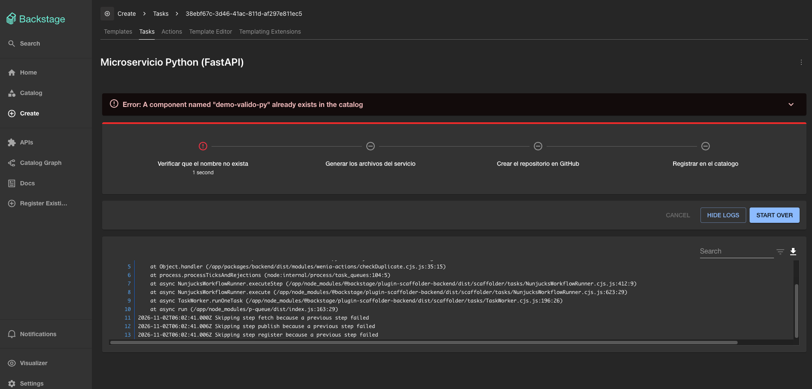
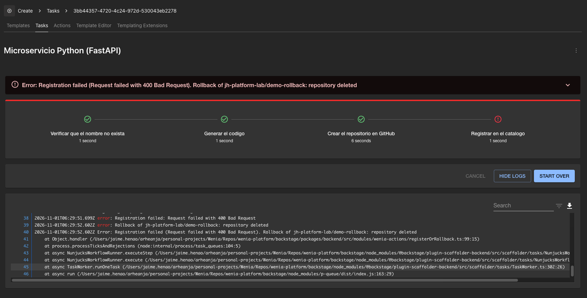
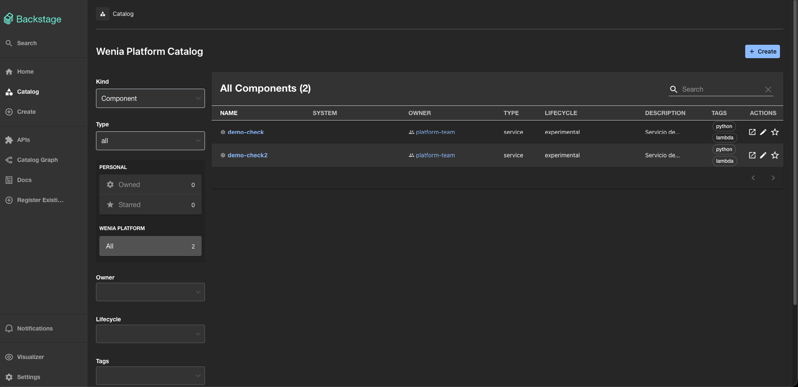
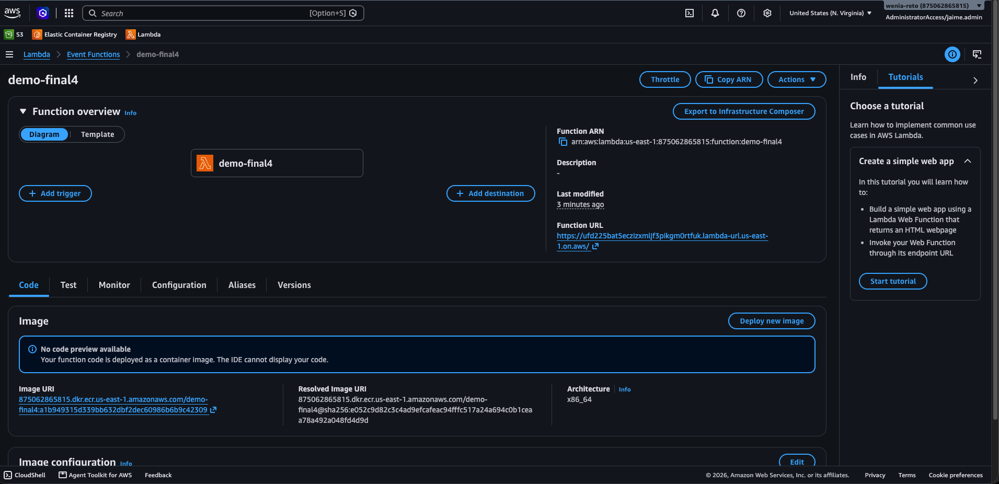
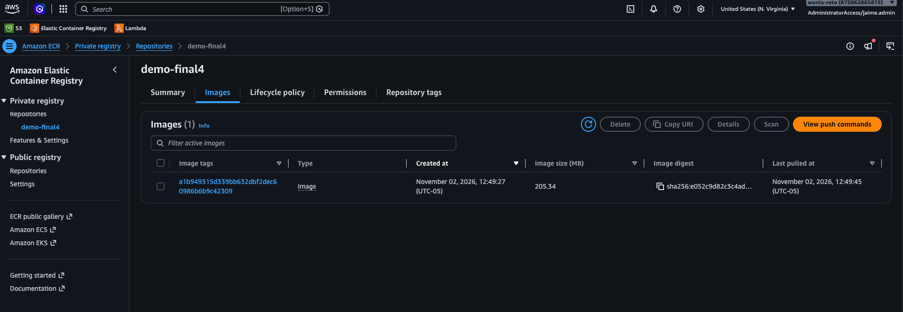
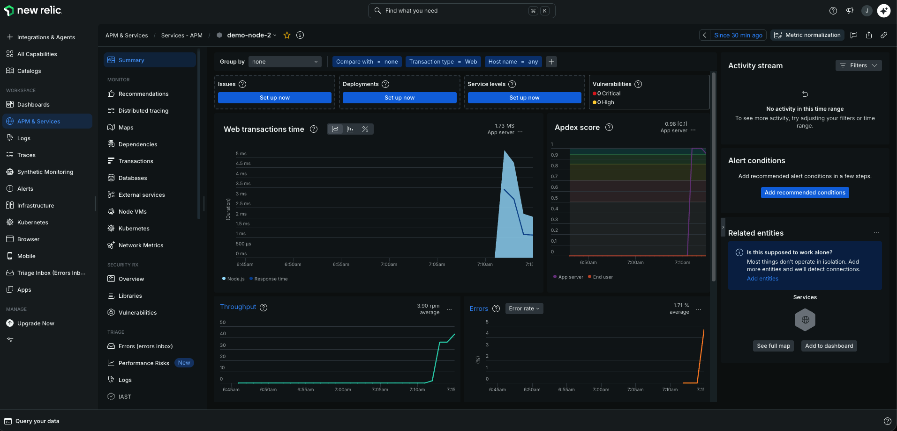

Caso técnico · Platform Engineer
Un camino dorado para crear servicios
Autoservicio en Backstage: del formulario a un servicio listo, consistente y verificable.
El problema
Habilitar un servicio toma días y pasa por solicitudes manuales Se copian configuraciones entre repos Cada equipo lo hace distinto La solución
Un formulario valida y genera todo Repo, catálogo, APIs, Docker, CI/CD, Terraform y documentación Los errores se manejan y se pueden verificar
Cómo encaja
De la solicitud al servicio en ejecución
Desarrollador
→
Backstageformulario
→
GitHubrepo nuevo
→
CI + CDTerraform
→
ECR
→
Lambdao Kubernetes
Plantillas aparte Nueve plantillas viven en su propio repo para evolucionar sin tocar el portal.
Catálogo Cada servicio queda registrado con su API OpenAPI y su documentación.
Observabilidad Cada alta o fallo envía un evento a New Relic.
Qué hace Backstage al crear
Cuatro pasos, con rollback
1 Verificarwenia:check-duplicate
→
2 Generarfetch:template
→
3 Publicarpublish:github
→
4 Registrarwenia:register-or-rollback
El formulario valida Nombre DNS, 3 a 40 caracteres Equipo de una lista cerrada Lenguaje y tipo (Lambda o Kubernetes) APIs: nombre, método y ruta El proyecto generado trae Dockerfile por caso CI y CD en GitHub Actions Terraform, k8s y New Relic TechDocs y OpenAPI
Caso válido
Servicio creado, repo y catálogo

Tarea con los cuatro pasos en verde 
El repo y la entidad registrada en el catálogo
Solicitudes inválidas y duplicadas
Un error nunca se presenta como éxito

Inválido: Mi_Servicio lo rechaza el formulario y no corre ningún paso
Duplicado: falla en el primer paso; no se crea nada
Fallo durante la generación
Compensación: rollback dentro de la acción
Repo creadopaso 3
→
Registro en el catálogodryRun + alta
→
Falla400 Bad Request
→
Rollbackborra el repo de esta tarea
→
Tarea FALLIDAambos mensajes
Tres guardas Solo la organización permitida El nombre pasa por la expresión regular Solo repos creados hace menos de 15 min Por qué dentro de la acción Los pasos del scaffolder no tienen "en caso de fallo": si uno falla, los siguientes no corren. La compensación vive donde puede fallar.
Evidencia del rollback
Pasos 1 a 3 en verde, registro en rojo, repo borrado

Tarea fallida con repository deleted (verificado el 1 de noviembre) 
El catálogo no contiene el servicio fallido
Re-verificado el 3 de noviembre
Sigue funcionando con el evento a New Relic
registration-failed reason: "Request failed with 400 Bad Request"
rollback repository: jh-platform-lab/demo-rollback2
outcome: "repository deleted"
newrelic-event WeniaServiceRegistrationFailed outcome: "sent"
Error: Registration failed (Request failed with 400 Bad Request).
Rollback of jh-platform-lab/demo-rollback2: repository deleted
Comprobado por fuera
GitHub responde 404 para el repo 0 componentes con ese nombre en el catálogoEl evento de fallo llegó a New Relic Cómo se fuerza sin tocar producción
Se cambia catalogInfoPath a un archivo que no existe en la plantilla y se crea un servicio en modo desarrollo. Luego se revierte.
El repo generado
CI valida; solo el CD toca la nube
CI · cada PR y main · nunca publica
Pruebas unitarias y auditoría de dependencias Gitleaks (secretos) Terraform: fmt, validate y checkov Construcción de imágenes y análisis con Trivy CD · solo main · entorno production
Autenticación OIDC, sin llaves Terraform crea ECR y el rol de CD Imagen con el SHA del commit como tag Lambda con Function URL, o Kubernetes en Kind
push a main
→
ECR + rolTerraform
→
Imagentag = SHA
→
Lambdasi tipo lambda
·
Kindsi tipo k8s
AWS · lo que sí se desplegó
Imagen en ECR, Lambda y URL pública

Función Lambda (paquete de imagen) creada por el CD 
Imagen en ECR; el tag es el SHA del commit
$ curl https://<function-url>/health {"status":"ok"} -> HTTP 200
$ curl https://<function-url>/items {"detail":"Not implemented"} -> HTTP 501 (stub por diseño)
Observabilidad
Cada alta y cada fallo llegan a New Relic
Qué Cómo Alta de servicio WeniaServiceRegisteredFallo de registro WeniaServiceRegistrationFailedDashboard Como código (7 consultas NRQL) Servicio (APM) Agente; activo al correr con la licencia
De mejor esfuerzo: registrar el servicio es lo crítico; la observabilidad no puede tumbar un alta.

APM de un servicio generado con datos reales
Verificación, límites y evolución
Lo ejecutado, separado de lo que requiere AWS
LOCAL Ansible con segunda ejecución changed=0; pruebas y bandit; renderizado Python y Node; Terraform fmt, validate y checkov; imágenes; Kind con /health
AWS Terraform apply, CD a ECR y Lambda, Function URL (evidence/aws/)
MANUAL Los cuatro casos del scaffolder y New Relic con cuenta real
Límites, sin adornos
Kubernetes llega a la imagen y a Kind; no hay EKS Go y Java: CD completo pendiente S3 y SQS: validación estática, sin probar en AWS Evolución
Anotación de versión en cada servicio Plantilla "Actualizar servicio" abre un PR con el diff Qué medir: tiempo a primer despliegue y solicitudes fallidas
Todo se verifica con un comando: bash scripts/verify.sh --kind